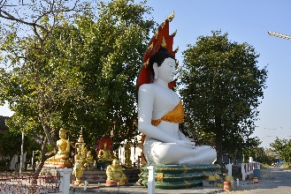

Lop Buri (ลพบุรี)
Há 150km à nordeste de Bangcoc, é uma das cidades mais antigas da Tailândia, e a segunda capital após a fundação do reino de Ayutthaya, em 1350.Foi abandonada após a morte do Rei Narai, em 1688, mas partes da cidade foram restauradas em 1856 pelo rei Mongkut (Rama IV). Em 1864 foi declarada "capital de verão".
Foi uma importante parte do Império Khmer, e mais tarde do reino de Ayutthaya, sob o reinado de Narai o Grande, que costumava passar 8 meses por ano na cidade.
Mais tarde, o rei Mongkut da dinastia Chakri morou na cidade.
A cidade é bem parada, e sua localização conveniente com relação à Bangcoc faz dela uma boa opção para escapar do caos e poluição da cidade grande, sendo inclusive uma opção de day trip. Mas a habitual calmaria da cidade às vezes é interrompida em áreas específicas, graças a correria de bandos de "macacos do velho mundo" (macaca fascicularis), uma espécie característica do Sudeste Asiático.
Em 2006 tinha uma população de 26.500 habitantes.
Como chegar à Lop Buri
A rodovia principal de Lob Buri é a Route 1 (Rodovia Phahonyothin), que começa em Bangcoc e passa por Lop Buri, Chai Nat, Nakhon Sawan, Kamphaeng Phet, Tak, Lampang, Chiang Rai e pela fronteira com Mianmar em Mae Sai. Já a Route 311 leva à oeste para Sing Buri, e a Route 3196 segue para sudoeste para Ang Thong.A estação de trem de Lop Buri faz parte da linha norte da State Railway of Thailand, sendo o final do serviço suburbano de Bangcoc. Os trens vindo de Bangcoc levam em média 2h para chegar.
A cidade possui também um aeroporto, o Khok Kathiam, que fica 9km ao norte da cidade.
De ônibus: ônibus saem diariamente de Ayutthaya a cada 20 minutos, levam cerca de 2 horas e custam ฿$ 35. Ônibus com ar condicionado saem a cada 30 minutos do terminal Mo Chit 2 em Bangcoc, das 5:00 às 20:30, e custam ฿$ 80.
De van: vans saem da estação em frente ao Victory Monument, levam 2 horas e custam ฿$ 120. Há vários serviços de van na área. Se o horário de um não é bom, procure em outras vans. Vans também saem da estação norte (Mo Chit 2) e custam o mesmo preço. A última van sai por volta das 18:00.
De trem: 17 linhas saem diariamente da estação Hua Lamphong em Bangcoc, das 4:20 às 22:00. A viagem leva de 2h15min à 2h50min e varia de ฿$ 43 à ฿$ 467 dependendo do serviço e classe do vagão.
Fique seguro
A cidade é famosa por seus macacos que superpovoam a Cidade Antiga, especialmente na área do Phra Prang Sam Yot e do Santuário Phra Kaan.Fique de olho em macacos passando por galhos de árvores ou em fios de postes, sentados em tetos e marquises e esteja ciente de que alguns possuem o péssimo hábito de defecar em pedestres incautos, pular nas pessoas para roubar comida e roubar bolsas ou sacolas que eles suspeitem que possuam algo comestível.
Outro problema, um pouco mais grave, são os cães. A noite não há nada acontecendo na Cidade Velha, portanto os cães de rua consideram qualquer um caminhando a noite como suspeito. Enquanto a maioria apenas olha para você, alguns latem, correm atrás de você e alguns pulam e mordem. Estes ataques são mais comuns à noite, mas são raros durante o dia.
As atrações de Lop Buri
Festival Phra Narai
Banquete dos macacos
Todos os anos, em Novembro, é organizado um grande banquete para os macacos, com mesas longas e frutas cortadas e descascadas, além de outros alimentos levados
pelos organizadores e pelos moradores locais.
Fotojornalistas e turistas de todo o mundo vão ao jantar para captar imagens desse banquete, chamado detoh jin ling e que acontece no
centro da cidade antiga.
O empresário responsável pela organização do banquete também mandou fazer estátuas de concreto de macacos, e espalhou pela cidade.
Cuidado com seus pertences, pois alguns macacos podem agarrá-los e sair correndo com eles.
Vale a pena também uma visita ao interior do templo onde o banquete acontece.
Para mais informações, visite: http://www.offtherails.com/monkey.html.
Fotojornalistas e turistas de todo o mundo vão ao jantar para captar imagens desse banquete, chamado de
O empresário responsável pela organização do banquete também mandou fazer estátuas de concreto de macacos, e espalhou pela cidade.
Cuidado com seus pertences, pois alguns macacos podem agarrá-los e sair correndo com eles.
Vale a pena também uma visita ao interior do templo onde o banquete acontece.
Para mais informações, visite: http://www.offtherails.com/monkey.html.
Prang Sam Yod
Prang com 3 torres em sequência, com galerias fazendo a ligação entre elas.
Foi construído em estilo Bayon (estilo artístico Khmer), com laterítico e arenito e decorado com estuque.
Mais tarde, no período Ayutthaya, foi renovado.
Antigamente era um templo hindu, e as 3 torres que simbolizavam a trindade hindu de Shiva, Vishnu e Brahma já abrigaram uma imagem de Buda coberto por najas (no centro), uma imagem Avalokitesavara Bhodisattava à direita e uma Prajna Paramita à esquerda.
Atualmente contém 2 imagens de Buda em estilo Lop Buri.
O prang está localizado no lado oposto à linha férrea e fica literalmente lotado de macacos, portanto cuidado, pois eles são atraídos principalmente por comida, mas podem roubar outros pertences também.
Foi construído em estilo Bayon (estilo artístico Khmer), com laterítico e arenito e decorado com estuque.
Mais tarde, no período Ayutthaya, foi renovado.
Antigamente era um templo hindu, e as 3 torres que simbolizavam a trindade hindu de Shiva, Vishnu e Brahma já abrigaram uma imagem de Buda coberto por najas (no centro), uma imagem Avalokitesavara Bhodisattava à direita e uma Prajna Paramita à esquerda.
Atualmente contém 2 imagens de Buda em estilo Lop Buri.
O prang está localizado no lado oposto à linha férrea e fica literalmente lotado de macacos, portanto cuidado, pois eles são atraídos principalmente por comida, mas podem roubar outros pertences também.
Wat Phra Si Ratana Mahathat
Principal e mais antiga ruína da cidade, de frente à estação de trem.
O layout do templo consiste de um grande prang central que serve de construção principal, com chedis ao redor.
Presume-se que a construção, em estilo Khmer, tenha sido erguida no Século XII, sendo renovada várias vezes, principalmente durante o período Ayutthaya.
Durante o apogeu de Lop Buri, foi o maior monastério da cidade, e foi incluído nos mapas feitos por cartógrafos franceses em 1687.
O layout do templo consiste de um grande prang central que serve de construção principal, com chedis ao redor.
Presume-se que a construção, em estilo Khmer, tenha sido erguida no Século XII, sendo renovada várias vezes, principalmente durante o período Ayutthaya.
Durante o apogeu de Lop Buri, foi o maior monastério da cidade, e foi incluído nos mapas feitos por cartógrafos franceses em 1687.
Phra Narai Ratchaniwet
Palácio construído pelo rei Narai entre os anos de 1665 e 1677 (período Ayutthaya), com a ajuda de engenheiros e arquitetos franceses, italianos e portugueses.
O rei gostava tanto do palácio que decretou Lop Buri como "vice-capital" do país, e só retornava à Ayutthaya durante a temporada das chuvas. Após sua morte, em 1688, o palácio ficou abandonado.
Durante o período Ratanakosin, em 1856, o rei Mongkut (Rama IV) construiu um novo salão, restaurou algumas construções e renomeou o palácio como Phra Narai Ratchaniwet.
Em 1924 o palácio foi convertido em museu, que consiste das ruínas de várias construções em um parque fechado, e do palácio central, que exibe objetos pré históricos, imagens de Buda em estilo Dvaravati, Lop Buri e Khmer, entre outros artigos do rei.
O rei gostava tanto do palácio que decretou Lop Buri como "vice-capital" do país, e só retornava à Ayutthaya durante a temporada das chuvas. Após sua morte, em 1688, o palácio ficou abandonado.
Durante o período Ratanakosin, em 1856, o rei Mongkut (Rama IV) construiu um novo salão, restaurou algumas construções e renomeou o palácio como Phra Narai Ratchaniwet.
Em 1924 o palácio foi convertido em museu, que consiste das ruínas de várias construções em um parque fechado, e do palácio central, que exibe objetos pré históricos, imagens de Buda em estilo Dvaravati, Lop Buri e Khmer, entre outros artigos do rei.
Local: entre as ruas Ratchadamnoen e Pratu Chai.
Horário: diariamente das 7:00 às 17:30.
Entrada: ฿$ 150 (estrangeiros) ou ฿$ 30 (tailandeses).
Horário: diariamente das 7:00 às 17:30.
Entrada: ฿$ 150 (estrangeiros) ou ฿$ 30 (tailandeses).
Museu Nacional Somdet Phra Narai
Situado no complexo do palácio, mais precisamente no Pavilhão Phiman Mongkut, exibe uma série de construções em estilo antigo no centro do jardim.
Conta com uma coleção de objetos e artefatos dos períodos pré histórico da Tailândia central, Dvaravati, de influência Khmer, Ayutthaya e do período Rattanakosin, além de apresentar a vida do centro da Tailândia nos tempos atuais.
Dezesseis salas da construção são usadas para galerias permanentes, e os objetos exibidos estão divididos nas seguintes categorias:
* Período Pré Histórico na Tailândia Central: exibições derivadas de várias escavações na região de Lop Buri. Subcategorias de itens são ornamentos, vários tipos de cerâmica, metalurgia pré histórica e machados de pedras e enxós. Estes objetos podem ser datados de 2000 AC à 100 DC.
* Tailândia Central dos Séculos 6 ao 9: a história desse período é retratada através de materiais arqueológicos e esculturas religiosas nas seguintes subcategorias: cidades e assentamentos, santuários religiosos, tecnologia e estilo de vida, escrita e linguagem e crenças religiosas.
* Arte infuenciada no estilo Khmer: durante os Séculos 10 ao 15, muitos monumentos e esculturas na região de Lop Buri refletiam a forte influência da arte Khmer de Angkor. Exibidos em 2 salas, estão objetos pertencentes à esse período, como imagens de Buda, guardiões de portas, lintéis, correntes de Shiva, Bodhisattvas, etc.
* Estilos de arte na Tailândia: a ampla coleção de esculturas representa estilos de arte encontrados em toda a Tailândia. Os objetos estão agrupados em seções de Arte de Lop Buri, Arte de Sukhothai, Arte Srivichaiya (Tailândia Peninsular), Arte Lanna Thai (norte) e arte do Nordeste Tailandês.
* Galeria de cerâmica: a coleção inclui todos os tipos de cerâmica produzidas na Tailândia, nos estilos Sukhothai, Lanna Thai e Sri Satchanalai, além de cerâmicas da China e do Vietnã.
* Estilo de Arte do Período Ayutthaya e Bangcoc (Séculos 15 ao 21): os objetos pertencentes à esse período são imagens de Buda, painéis de portas, decorações em gesso, moedas, têxteis, cerâmicas importadas e locais, etc.
* Memorial ao rei Mongkut (1851-1868): esta câmara já foi o quarto privativo do rei Mongkut.
Atualmente contém objetos associados à ele e ao seu reinado.
* Pavilhão Chantara Phisan: construção separada em 2 salas. Na primeira, são exibidos aspectos do reinado de Narai (1666-1688). Na outra há armários para manuscritos budistas, palanquins, cadeiras e ventiladores eclesiásticos.
No local você pode comprar livros, cartões postais, mapas e souvenirs.
Conta com uma coleção de objetos e artefatos dos períodos pré histórico da Tailândia central, Dvaravati, de influência Khmer, Ayutthaya e do período Rattanakosin, além de apresentar a vida do centro da Tailândia nos tempos atuais.
Dezesseis salas da construção são usadas para galerias permanentes, e os objetos exibidos estão divididos nas seguintes categorias:
* Período Pré Histórico na Tailândia Central: exibições derivadas de várias escavações na região de Lop Buri. Subcategorias de itens são ornamentos, vários tipos de cerâmica, metalurgia pré histórica e machados de pedras e enxós. Estes objetos podem ser datados de 2000 AC à 100 DC.
* Tailândia Central dos Séculos 6 ao 9: a história desse período é retratada através de materiais arqueológicos e esculturas religiosas nas seguintes subcategorias: cidades e assentamentos, santuários religiosos, tecnologia e estilo de vida, escrita e linguagem e crenças religiosas.
* Arte infuenciada no estilo Khmer: durante os Séculos 10 ao 15, muitos monumentos e esculturas na região de Lop Buri refletiam a forte influência da arte Khmer de Angkor. Exibidos em 2 salas, estão objetos pertencentes à esse período, como imagens de Buda, guardiões de portas, lintéis, correntes de Shiva, Bodhisattvas, etc.
* Estilos de arte na Tailândia: a ampla coleção de esculturas representa estilos de arte encontrados em toda a Tailândia. Os objetos estão agrupados em seções de Arte de Lop Buri, Arte de Sukhothai, Arte Srivichaiya (Tailândia Peninsular), Arte Lanna Thai (norte) e arte do Nordeste Tailandês.
* Galeria de cerâmica: a coleção inclui todos os tipos de cerâmica produzidas na Tailândia, nos estilos Sukhothai, Lanna Thai e Sri Satchanalai, além de cerâmicas da China e do Vietnã.
* Estilo de Arte do Período Ayutthaya e Bangcoc (Séculos 15 ao 21): os objetos pertencentes à esse período são imagens de Buda, painéis de portas, decorações em gesso, moedas, têxteis, cerâmicas importadas e locais, etc.
* Memorial ao rei Mongkut (1851-1868): esta câmara já foi o quarto privativo do rei Mongkut.
Atualmente contém objetos associados à ele e ao seu reinado.
* Pavilhão Chantara Phisan: construção separada em 2 salas. Na primeira, são exibidos aspectos do reinado de Narai (1666-1688). Na outra há armários para manuscritos budistas, palanquins, cadeiras e ventiladores eclesiásticos.
No local você pode comprar livros, cartões postais, mapas e souvenirs.
Local: rua Sorasak, Muang District.
Horário: de Quarta à Domingo das 9:00 às 16:00. Fecha às Segundas, Terças e feriados nacionais.
Entrada: ฿$ 50.
Horário: de Quarta à Domingo das 9:00 às 16:00. Fecha às Segundas, Terças e feriados nacionais.
Entrada: ฿$ 50.
Wat Kawisararam Ratchaworawihan
Templo real localizado ao sul do complexo do Palácio Real. Antes se chamava Wat Khwit.
Chegando ao final do reinado de Narai, havia uma inquietação popular. Enquanto o rei estava muito doente, serventes reais solicitaram permissão real para serem ordenados aqui. O rei permitiu, e deu conjuntos de roupas de monges e artigos necessários para monges budistas, bem como presidiu a cerimônia de ordenação de seus servos. O rei deu também um de seus prédios do palácio para a realização da cerimônia.
É um caso raro de templo dentro de um palácio e continuou assim até o reinado de Rama IV, que separou e renomeou o templo para seu nome atual.
Chegando ao final do reinado de Narai, havia uma inquietação popular. Enquanto o rei estava muito doente, serventes reais solicitaram permissão real para serem ordenados aqui. O rei permitiu, e deu conjuntos de roupas de monges e artigos necessários para monges budistas, bem como presidiu a cerimônia de ordenação de seus servos. O rei deu também um de seus prédios do palácio para a realização da cerimônia.
É um caso raro de templo dentro de um palácio e continuou assim até o reinado de Rama IV, que separou e renomeou o templo para seu nome atual.
Salão Dusit Sawan
Era aqui que o rei Narai recebia embaixadores e dignatários de países vizinhos.
Acredita-se que o teto tinha uma forma de pirâmide no mesmo estilo do Salão do Trono Dusit Mahaprasat no Grand Palace de Bangcoc.
O salão é dividido em 2 partes. A frontal, maior, com um teto alto e suas portas e janelas ogivais, e a traseira, com um piso elevado e janelas e portas em estilo tailandês.
Acredita-se que o teto tinha uma forma de pirâmide no mesmo estilo do Salão do Trono Dusit Mahaprasat no Grand Palace de Bangcoc.
O salão é dividido em 2 partes. A frontal, maior, com um teto alto e suas portas e janelas ogivais, e a traseira, com um piso elevado e janelas e portas em estilo tailandês.
Local: rua Sorasak, Muang District.
Horário: de Quarta à Domingo das 9:00 às 16:00. Fecha às Segundas, Terças e feriados nacionais
Entrada: ฿$ 50.
Voltar à lista
Horário: de Quarta à Domingo das 9:00 às 16:00. Fecha às Segundas, Terças e feriados nacionais
Entrada: ฿$ 50.
Festival Phra Narai
Festival que atrai turistas de outras partes da Tailândia, com uma ambientação mágica, especialmente no entardecer.
À noite, quase toda a cidade se reúne em frente ao palácio.
Muito do que é celebrado aqui como cultura tailandesa, começou com um marechal de campo tailandês nos anos 1930.
À noite, quase toda a cidade se reúne em frente ao palácio.
Muito do que é celebrado aqui como cultura tailandesa, começou com um marechal de campo tailandês nos anos 1930.
Prang Khaek
Esse prang fica próximo ao mercado principal no centro da cidade. Consiste de 3 prangs de tijolos em sequência,
de norte à sul. O do meio é o maior e os 3 possuem apenas 1 entrada à leste, enquanto há outras 3 entradas, todas falsas.
Acredita-se que tenham sido erguidos no Século X, quando era um local sagrado do Brahmanismo, com uma estátua de Shiva.
Acredita-se que tenham sido erguidos no Século X, quando era um local sagrado do Brahmanismo, com uma estátua de Shiva.
Chao Phraya Wichayen
Residência oficial dos embaixadores construída no reinado de Narai, que foi dividida em 3 partes com 3 vãos adjacentes.
Situado à oeste está o salão residencial que acomodava o embaixador grego Constantine Falcon, que trabalhou para o governo do rei.
A parte central é a igreja cristã.
Situado a leste está o salão residencial construído para acomodar outros embaixadores.
Situado à oeste está o salão residencial que acomodava o embaixador grego Constantine Falcon, que trabalhou para o governo do rei.
A parte central é a igreja cristã.
Situado a leste está o salão residencial construído para acomodar outros embaixadores.
Local: Wichayen Tha Hin, Mueang Lop Buri.
Horário: das 8:30 às 16:00.
Entrada: ฿$ 50.
Voltar à lista
Horário: das 8:30 às 16:00.
Entrada: ฿$ 50.
Wat Nakorn Kosa
Originalmente era um templo Khmer. Alguns acreditam que tenha sido construído no período Dvaravati, o primeiro da História tailandesa.
Durante o período Ayutthaya, um novo templo foi erguido sobre o antigo santuário, o que nota-se pelo grande viharn.
Durante o período Ayutthaya, um novo templo foi erguido sobre o antigo santuário, o que nota-se pelo grande viharn.
Local: Distrito de Ta Hin, à leste dos trilhos do trem, entre o San Phra Kan e a estação de trem.
Voltar à lista
Wat Manee Chonrakhan (Wat Monkhan)
Originalmente nomeado Wat Ko Kaeo, o templo foi construído durante o reinado de Mongkut (Rama IV, que reinou de 1851 à 1868).
Fica em uma pequena ilha ribeirinha no rio Lop Buri.
Seus destaques são as capelas, o Chedi Luang Pho Saeng e a grande imagem de Buda ao lado do rio.
Fica em uma pequena ilha ribeirinha no rio Lop Buri.
Seus destaques são as capelas, o Chedi Luang Pho Saeng e a grande imagem de Buda ao lado do rio.

Local: rua Prang Sam Yot.
Voltar à lista
San Phra Kan
Pequeno santuário no meio de uma rotatória do outro lado dos trilhos do trem da Cidade Antiga, próximo ao Prang Sam Yot.
Costumava ser um prang único em estilo Khmer do Século XIII, mas desde então foi caindo aos pedaços.
Atualmente há um santuário moderno com 4 escadarias com estátuas de macacos nos pés de cada uma delas.
Atenção, pois fica repleto de macacos, e alguns podem tentar roubar seus pertences.
Costumava ser um prang único em estilo Khmer do Século XIII, mas desde então foi caindo aos pedaços.
Atualmente há um santuário moderno com 4 escadarias com estátuas de macacos nos pés de cada uma delas.
Atenção, pois fica repleto de macacos, e alguns podem tentar roubar seus pertences.
Local: rua Prang Sam Yot.
Voltar à lista
Wat Sao Thong
Templo real de 3ª classe, construído em uma área próxima ao Palácio Real e ao rio, na área das casas dos embaixadores persa e de países
europeus durante o reinado de Narai, do reino de Ayutthaya. Algumas construções ainda estão de pé e mantêm seus nomes estrangeiros.
Dizem que o viharn já foi uma igreja ou mesquita.
A principal imagem de Buda tem 6m de largura e 9m de altura, e é a mais sagrada para os moradores da cidade.
Dizem que o viharn já foi uma igreja ou mesquita.
A principal imagem de Buda tem 6m de largura e 9m de altura, e é a mais sagrada para os moradores da cidade.